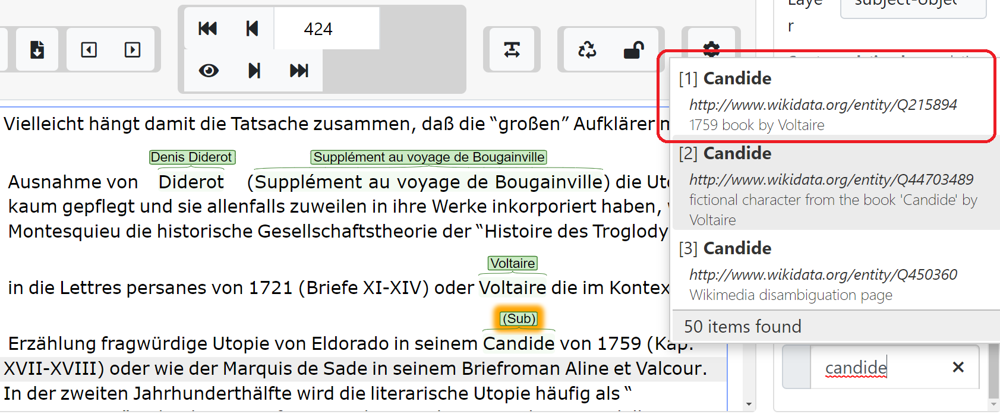
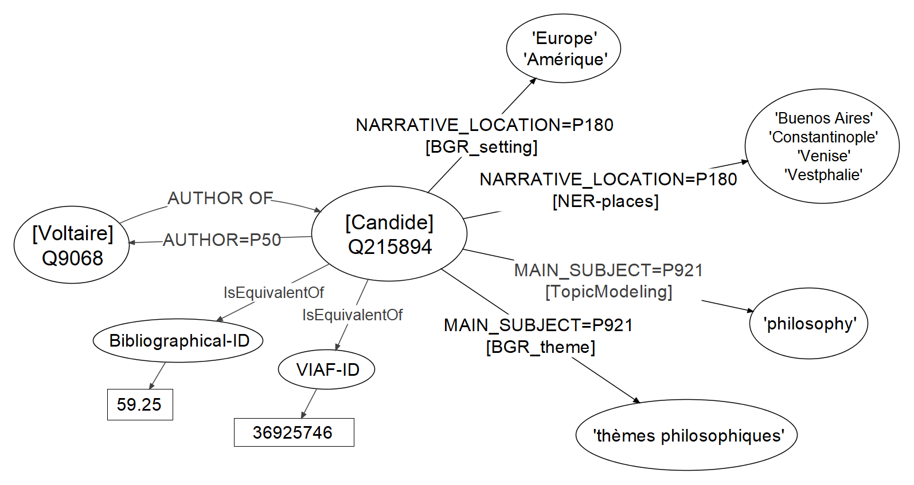
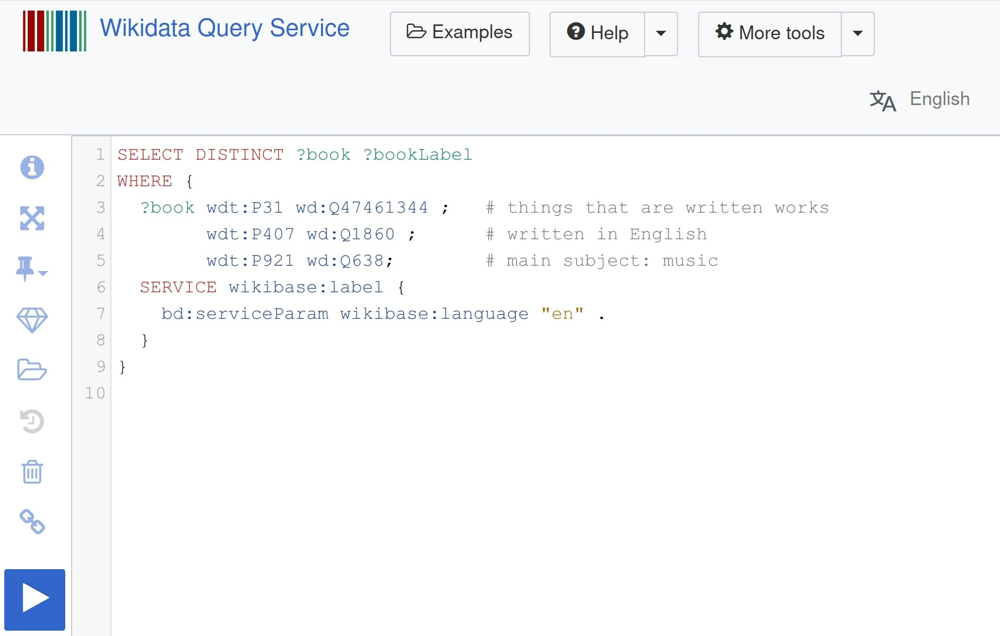

# Mining and Modeling Literary History and Historiography <img height="60" data-src="img/basics/mimotext-logo.png"> <br/> <hr/> <p>Christof Schöch with contributions from Maria Hinzmann, Andreas Lüschow, Julia Röttgermann, Katharina Dietz and Anne Klee</p> <p><a href="https://mimotext.github.io/modeling/">https://mimotext.github.io/modeling/</a></p> <hr/> <p><strong><emph>Vilnius, September 2020</strong></p> <hr/> <img height="50" data-src="img/basics/tcdh-slim.png"> <img height="50" data-src="img/basics/uni-trier.png"> <img height="50" data-src="img/basics/mwrlp.svg"> - ## Overview 1. [Modeling in Digital Humanities](#/2) 2. [Introduction to 'Mining and Modeling Text'](#/3) 3. [Modeling Literary History](#/4) 4. [Modeling Literary Historiography](#/5) 5. [A network of information](#/6) - ## (1) Modeling in Digital Humanities -- #### Jannidis & Flanders, *The Shape of Data in DH*, 2019 <img height="250" data-src="img/flanders-jannidis.jpg"> >"The term 'data modeling' in computer science is most typically used in a fairly restrictive sense for the modeling of relational databases, while the digital humanities has a more general understanding of the term: data modeling is the modeling of some segment of the world in such a way to make some aspects computable." -- #### Willard McCarty, *Humanities Computing*, 2005 <img height="250" data-src="img/mccarty.jpg"> >"The residue of uniqueness" * modeling as an iterative, knowledge-producing process) -- #### Computational Modeling in DH * Data Modeling <!-- .element: class="fragment" data-fragment-index="1" --> * Conceptual Modeling: entities and relations<br/>(taxonomies, ontologies, vocabularies) <!-- .element: class="fragment" data-fragment-index="2" --> * Logical Modeling: schemas / data structures<br/>(e.g. in XML-TEI, RDF) <!-- .element: class="fragment" data-fragment-index="3" --> * Statistical Modeling <!-- .element: class="fragment" data-fragment-index="4" --> * Detecting trends and patterns (e.g. Topic Modeling, Linear Regression, Keyness etc.) <!-- .element: class="fragment" data-fragment-index="4" --> * Language Models <!-- .element: class="fragment" data-fragment-index="5" --> * Properties of Languages encoded in language models (e.g. Word Embedding Models) <!-- .element: class="fragment" data-fragment-index="5" --> - ## (2) Introduction to<br/>'Mining and Modeling Text' -- #### MiMoText: overview <a href="img/mimotext-overview_eng.png"><img height="450" data-src="img/mimotext-overview_eng.png"></a> * <a href="https://mimotext.uni-trier.de">https://mimotext.uni-trier.de</a> -- #### What information is relevant to literary history? * Catalogues <!-- .element: class="fragment" data-fragment-index="1" --> * Metadata: authors, works, publishers, etc. * Keywords in the *Bibliographie...*: setting, plot, protagonists, themes, style <br/><br/> * Literary histories <!-- .element: class="fragment" data-fragment-index="2" --> * Plot, content, themes * Value judgements of authors and works * Relationships between authors and works <br/><br/> * Primary texts (novels) <!-- .element: class="fragment" data-fragment-index="3" --> * Place names * Character names * Topics / themes * Foreign-language segments * Proportion of direct speech * Happy / sad ending? * etc. -- #### How do we represent this information?<br/>Linked Open Data / Triples <img height="450" data-src="img/rdf11-primer-example-graph.jpg"> - ## (3) Mining and Modeling Data -- #### *Bibliographie du Genre romanesque*: Candide <a href="img/bgrf-Candide.png"><img height="500" src="img/bgrf-Candide.png"></img></a> -- #### *Bibliographie* modeled as RDF <a href="img/bgrf-Diderot-RDF.png"><img height="500" src="img/bgrf-Diderot-RDF.png"></img></a> -- #### Example: Mining primary texts (novels) * Aim: 200 volumes of novels (1750-1800) <!-- .element: class="fragment" data-fragment-index="1" --> * Sources: double keying, OCR, portals <!-- .element: class="fragment" data-fragment-index="2" --> * Corpus composition: decades and narrative forms <!-- .element: class="fragment" data-fragment-index="3" --> * Current pilot corpus: ca. 80 volumes (XML-TEI, ELTeC schema) <!-- .element: class="fragment" data-fragment-index="4" --> * Method of analysis: Topic Modeling <!-- .element: class="fragment" data-fragment-index="5" --> -- #### Topic Modeling <a href="img/tm_blei.png"><img height="500" src="img/tm_blei.png"></img></a> -- #### First results <a href="img/pilot_mod200_fr_10_500_expStop.html"><img height="500" src="img/pyldavis.png"></img></a> -- #### Modeling as Linked Open Data (LOD) * predicate MAIN_SUBJECT <!-- .element: class="fragment" data-fragment-index="1" --> * = Wikidata: P921 (cf. Dublin Core "Subject") <!-- .element: class="fragment" data-fragment-index="2" --> * with threshold for inclusion and probability (and/or rank) <!-- .element: class="fragment" data-fragment-index="3" --> * Candide MAIN_SUBJECT 'philosophy' <!-- .element: class="fragment" data-fragment-index="4" --> * {Candide MAIN_SUBJECT 'philosophy'} PROBABILITY 0.34 / RANK 2 <!-- .element: class="fragment" data-fragment-index="5" --> * Integration into the database of statements <!-- .element: class="fragment" data-fragment-index="6" --> - ## (4) Modeling Literary Historiography <br/> -- ### (A) Extracting Statements * Create training data by manual annotation (in INCePTION) * Train and apply Machine Learning (in Python) -- #### Annotate subject-object layer <a href="img/inception_Candide-disambiguation.png"></img></a> * here: named entities: authors, works * disambiguation of entities via Wikidata IDs -- #### Annotate relation layer <a href="img/inception_Candide-relation.png"><img height="300" src="img/inception_Candide-relation.png"></img></a> * here: "author_of" relation (Wikidata: inverse of P50) * Statements/ LOD triples: 'author AUTHOR_OF work' * Training data: sentences + statements -- #### Machine Learning * Material: sentences automatically annotated for named entities <!-- .element: class="fragment" data-fragment-index="1" --> * Provide manual annotations of sentences (training and evaluation) <!-- .element: class="fragment" data-fragment-index="2" --> * Learn patterns / probabilities for features indicative of a relation <!-- .element: class="fragment" data-fragment-index="3" --> * Generate relation annotations for all sentences <!-- .element: class="fragment" data-fragment-index="4" --> -- ### (B) Modeling Historiography * Which types of statements are necessary? <!-- .element: class="fragment" data-fragment-index="1" --> * How do we create scholarly consensus? <!-- .element: class="fragment" data-fragment-index="2" --> * Meta-perspective on disciplinary discourse <!-- .element: class="fragment" data-fragment-index="3" --> -- #### Extract from literary history >Candide is Voltaire's most widely read work and was probably already during the author's lifetime. When it first appeared in print in Geneva in 1759, it was immediately banned, but only with the result that it was reprinted thirteen times in the same year. (Erich Köhler, Aufklärung II, 1984; translation: DeepL) -- ### Statements (1) * Voltaire (viaf:36925746) AUTHOR_OF Candide (viaf:176620251) <!-- .element: class="fragment" data-fragment-index="1" --> * Candide PUBLICATION_DATE 1759 <!-- .element: class="fragment" data-fragment-index="2" --> * Candide PUBLICATION_LOCATION Geneva (tgn:7007279) <!-- .element: class="fragment" data-fragment-index="3" --> -- ### Statements (2) * Candide LEGAL_STATUS censored <!-- .element: class="fragment" data-fragment-index="1" --> * Candide RECEPTION_INTENSITY high <!-- .element: class="fragment" data-fragment-index="2" --> * Candide RECEPTION_TIME immediate;long-term <!-- .element: class="fragment" data-fragment-index="3" --> * Candide GENRE novel; satire; utopia <!-- .element: class="fragment" data-fragment-index="4" --> * Candide NARRATIVE_LOCATION Lisbon; Eldorado; Constantinople <!-- .element: class="fragment" data-fragment-index="5" --> * Voltaire INFLUENCED_BY Leibniz <!-- .element: class="fragment" data-fragment-index="6" --> -- ### Special kinds of statements * Source:<br/>{Voltaire AUTHOR_OF Candide} SOURCE Köhler_1984<br/><br/> <!-- .element: class="fragment" data-fragment-index="1" --> * Qualifier:<br/>{Candide LEGAL_STATUS censored} TEMPORAL_SCOPE 1759-1765<br/><br/> <!-- .element: class="fragment" data-fragment-index="2" --> * Implicit:<br/>Köhler_1984 MAIN_SUBJECT Voltaire; Candide; Geneva<br/><br/> <!-- .element: class="fragment" data-fragment-index="3" --> - ## (5) A network of information -- ## Bringing it all together <a href="img/network-of-information.png"></img></a> -- ## Turn publications into data<br/>(retrospectively) * Our goal: "Wikidata for Literary History" <!-- .element: class="fragment" data-fragment-index="1" --> * Information system for literary history * Linked Open Data; SPARQL-Endpoint for queries; search ∓ browse * But: <!-- .element: class="fragment" data-fragment-index="2" --> * much more specific focus (novels 1750-1800) * better coverage (authors, works) * greater density of statements * systematic set of types of statements * many usage scenarios for literary historiography -- ## Consider publications as data<br/>(prospectively) * Digital and Open Access <!-- .element: class="fragment" data-fragment-index="1" --> * Publications as maschine-readable data <!-- .element: class="fragment" data-fragment-index="2" --> * Rich metadata <!-- .element: class="fragment" data-fragment-index="3" --> * Explicit, semantic text encoding <!-- .element: class="fragment" data-fragment-index="4" --> * Encoding and identification of named entities (authority files) <!-- .element: class="fragment" data-fragment-index="5" --> * Key statements formulated as LOD <!-- .element: class="fragment" data-fragment-index="6" --> * Everything in open file formats / standards <!-- .element: class="fragment" data-fragment-index="7" --> -- ### Thank you!<br/><br/>Questions or comments? <br/><br/> <br/><br/> <br/><br/> <br/><br/> slides: https://mimotext.github.io/modeling/ <br/>project: https://mimotext.uni-trier.de/ - ## Bonus slides -- #### Wikidata query: literary works about music <a href= "https://query.wikidata.org/#SELECT%20DISTINCT%20%3Fbook%20%3FbookLabel%0AWHERE%20%7B%0A%20%20%3Fbook%20wdt%3AP31%20wd%3AQ7725634%20%3B%20%20%20%23%20things%20that%20are%20written%20works%0A%20%20%20%20%20%20%20%20wdt%3AP407%20wd%3AQ1860%20%3B%20%20%20%20%20%20%23%20written%20in%20English%0A%20%20%20%20%20%20%20%20wdt%3AP921%20wd%3AQ638%3B%20%20%20%20%20%20%20%20%23%20main%20subject%3A%20music%0A%20%20SERVICE%20wikibase%3Alabel%20%7B%0A%20%20%20%20bd%3AserviceParam%20wikibase%3Alanguage%20%22en%22%20.%0A%20%20%7D%0A%7D%20%0A"></img></a> -- #### Wikidata query: written works in French about philosophy <a href="https://query.wikidata.org/#SELECT%20DISTINCT%20%3Fbook%20%3FbookLabel%0AWHERE%20%7B%0A%20%20%3Fbook%20wdt%3AP31%20wd%3AQ7725634%20%3B%20%20%23%20books%20that%20are%20literary%20works%0A%20%20%20%20%20%20%20%20wdt%3AP407%20wd%3AQ150%20%3B%20%20%20%20%20%20%23%20books%20written%20in%20French%0A%20%20%20%20%20%20%20%20wdt%3AP921%20wd%3AQ5891%3B%20%23main%20subject%3A%20philosophy%20%0A%20%20SERVICE%20wikibase%3Alabel%20%7B%0A%20%20%20%20bd%3AserviceParam%20wikibase%3Alanguage%20%22%5BAUTO_LANGUAGE%5D%2Cfr%22%20.%0A%20%20%7D%0A%7D%20%0A"><img height="500" src="img/wikidata-query.png"></img></a>